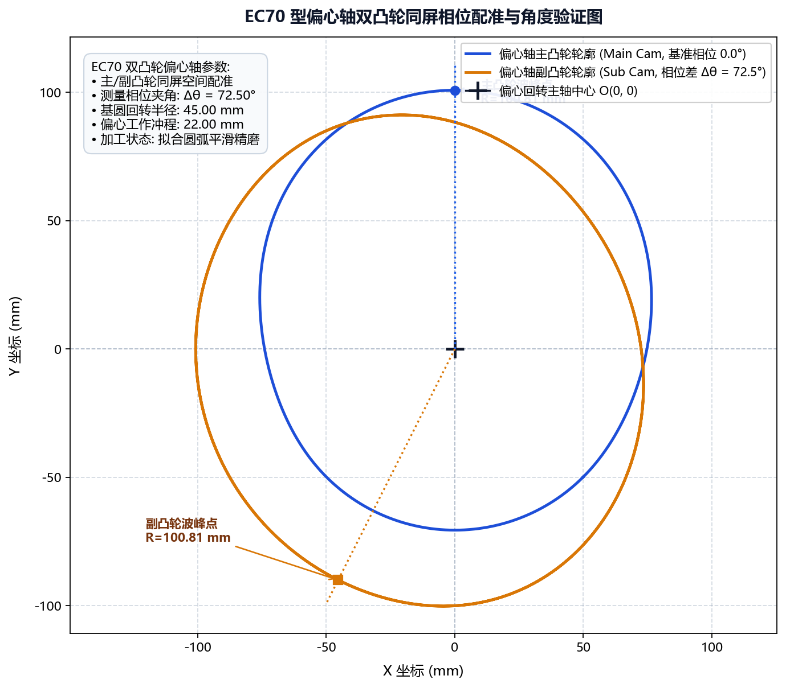

案例二：EC70 偏心轴主副凸轮配对
本案例针对流体泵阀与内燃机执行机构中常见的 EC70 偏心轴双凸轮总成，演示如何基于设计院提供的升程数据表，正向重构凸轮工作廓线，并通过图形变换与多 DXF 矢量叠合完成主副凸轮相对相位配对。
1. 工程背景与技术难点
- 零件规格：EC70 组合式偏心凸轮轴（包含 1 轴段主偏心轮与 2 轴段从动偏心轮）；
- 输入依据：仅持有机械设计手册升程表（包含 升程数列，Excel 格式）及基圆要求；
- 技术瓶颈：
- 主凸轮与副凸轮之间存在严苛的 空间几何相位差；
- 滚子中心节线与凸轮实际磨削表面存在法向几何偏差，手工偏置易在拐点发生自相交干涉。
2. 设计规范参数表
| 设计参数项 | 参数取值 | 说明 |
|---|---|---|
| 理论基圆半径 | 32.0 mm |
偏心轴基础圆柱段名义半径 |
| 随动滚子半径 | 15.0 mm |
柱塞挺柱滚轮实际接触半径 |
| 主副凸轮相对相位差 | 72.5° |
主副凸轮工作峰值偏角（逆时针） |
| 磨削预留余量 | 0.15 mm |
粗磨后单边精磨切深 |
3. 全流程实战操作步骤
步骤 1：基于升程表正向建模生成主凸轮
- 启动软件，切换至 绘图参数 -> CAM 数据文件；
- 载入原始升程数据表格：
D:/CamProjects/EC70/ec70_lift_table.xlsx； - 参数设定：
- 数据角度方向：选择“逆时针”；
- 数据类型：选择“相对值”（自动消除基圆零点漂移）；
- 勾选“绘制升程图形”；
- 基圆半径输入：
32.0；
- 指定导出路径为
ec70_cam_main.dxf，点击 生成凸轮数据。
步骤 2：重构副凸轮几何轮廓
- 切换至 绘图参数 -> CAM 图形变换；
- 导入刚刚生成的主凸轮 DXF；
- 将 图形旋转角度 设置为
-72.5（实现相位超前顺时针偏移）； - 导出为副凸轮文件
ec70_cam_sub.dxf。
步骤 3：多 DXF 空间叠合核验
- 切换至 工具 -> DXF 处理 -> DXF 文件对比；
- 在“DXF 文件 1”载入
ec70_cam_main.dxf； - 在“DXF 文件 2”载入
ec70_cam_sub.dxf； - 点击 生成对比 DXF：

- 交互测量：在生成的比对视图中，使用角度与距离探针测量两波峰之间的夹角，确认读数精确等于 ，且各处轮廓光滑圆润。
步骤 4：下发加工与参数归档
- 在“代码生成”模块中配置双轴加工程序，分别输出主副凸轮的数控代码；
- 打开“零件库”，点击 添加，将该产品工艺命名为
EC70-偏心轴主副凸轮存盘归档。
4. 成果评估
- 反求速度提升：原本需在 3D CAD 中反复构建曲面和投影耗时半天的型线展开，软件在 10 秒内即可完成解析求解与 DXF 输出；
- 相位对齐无误差：成品偏心轴装车实测，气阀定时误差小于 ，完全达到主机厂一级精度标准。